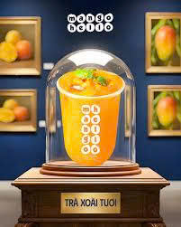
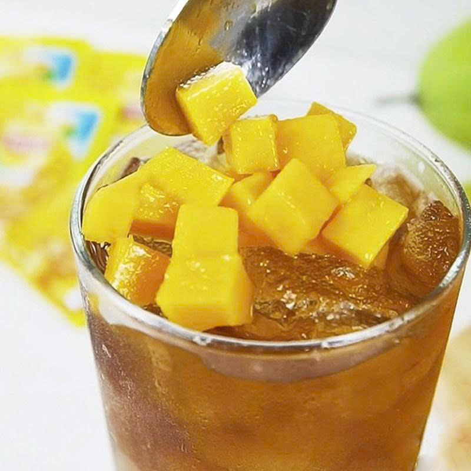

Trà xoài tươi Mango Hello có gì đặc biệt?
Tụi mình kết hợp cốt trà hảo hạng thơm nhẹ với mứt xoài chín tự nhiên, không dùng chất bảo quản, giữ trọn vị xoài tươi nguyên bản thanh mát.

Trà xoài có vị ngọt gắt quá không?
Không hề nha! Mango Hello hướng tới vị ngọt thanh thanh, chua nhẹ đặc trưng của trái xoài chín. Bạn cũng có thể tự điều chỉnh lượng đường khi pha tại nhà theo gu cá nhân.
Trẻ em có uống được trà xoài tươi không?
Được chứ, trà xoài tươi rất giàu vitamin và lành tính. Tuy nhiên vì có chứa một lượng nhỏ cốt trà, bạn nên cho bé uống vào ban ngày hoặc đầu giờ chiều để tránh bị mất ngủ nhé.
Trà xoài tươi để tủ lạnh được bao lâu?
Để thưởng thức vị xoài tươi ngon nhất, bạn nên uống ngay trong ngày. Nếu bảo quản trong ngăn mát tủ lạnh, hãy dùng hết trong vòng 24 - 48 tiếng nhé.

Nên chọn loại xoài nào để tự pha tại nhà ngon nhất?
Bạn nên ưu tiên chọn các loại xoài chín muồi, thịt dày, ít xơ và ngọt đậm như xoài cát Hòa Lộc hoặc xoài chín cây để ly trà thơm và dậy vị nhất.

Thời gian ủ cốt trà để pha trà xoài mất bao lâu?
Thời gian ủ trà lý tưởng là từ 7 đến 10 phút với nước nóng khoảng 85°C - 90°C. Không nên ủ quá lâu trà sẽ bị chát và làm lấn át mất mùi xoài.
Có thể dùng trà túi lọc có sẵn hương vị để pha không?
Có thể, nhưng tốt nhất bạn nên dùng trà xanh hoặc trà lài thuần khiết (không vị) để làm nổi bật lên hương thơm tự nhiên của xoài tươi.
Uống trà xoài có sợ bị nóng trong người không?
Xoài chín có tính ấm, nhưng khi kết hợp với cốt trà xanh thanh nhiệt và đá lạnh thì lại trở thành món thức uống giải nhiệt mùa hè cực tốt. Chỉ cần bạn không uống quá nhiều liên tục là hoàn toàn yên tâm!